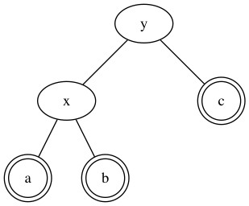
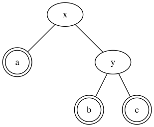

I Implemented a Red-Black Tree (part 1)
A Red-Black tree is a binary search tree (BST) that takes some action to try and keep itself balanced. We know that BSTs are great at storing nodes identified by some key for which an order relationship exists (e.g., integers). They have the property that the values in the left sub-tree of each node n have keys smaller-than n's key n.k, and those in the right sub-tree have keys greater-than n.k1.
In a BST, searching for a key takes logarithmic time, if the tree is balanced, that is, if the root's left and right sub-tree have roughly the same height. The problem is that for particular key insertion orders, this might no longer be true: in particular, if you insert the keys in sorted order, you'll find a tree which looks more like a linked list, that makes search linear in the worst case. This is why people have come up with a number of strategies to keep the BST balanced.
Rotations
A RB tree changes the Insert and DeleteNode operations by adding a bunch of invariants, to satisfy which some additional work is needed when changing the number of nodes in the tree. The basic operation is the node rotation: there is a way of rotating the position of 2 nodes while keeping the BST relationship valid. Here's a replica of an image from CLRS2 to illustrate the procedure: we want to change this

into this:

Suppose that the BST properties are valid for the first graph. It is easy to see that they keep holding for the second:
- The subtree
ahad keys smaller thanxand is stillx's left sub-tree after the rotation - The subtree
bhad keys larger thanx, and is stillx's right sub-tree after the rotation; it was also iny's sub-tree, and still is after the rotation cremainsy's right sub-tree
The tree class starts like:
class RBTree { // ... public: RBTree* root; // Each node keeps a pointer to the tree's root. int key; Color color; // We'll talk about this later :) RBTree* p; // The node's parent. RBTree* left; RBTree* right; // ...
The code for the rotate-right operation looks like this:
// static void RBTree::RightRotate(RBTree** root, RBTree* y) { assert(y); RBTree* x = y->left; // We're not in the configuration described in Figure 1, so we just stop. if (!x) { return; } y->left = x->right; if (x->right) { x->right->p = y; } x->p = y->p; x->right = y; if (!y->p) { // y is the root: assert(root && *root); *root = x; } else if (y->p->left == y) { // y is a left child: make x its new left child. y->p->left = x; } else { // y is a right child: make x its new right child. y->p->right = x; } // x is the new parent of y: y->p = x; }
Test RightRotate
The code above makes just some pointer manipulation to ensure we get in the right layout, as shown in Figure 2. Since we don't have an Insert function yet, we test this by first creating an RBTree object and wiring up the nodes manually. We can build a test fixture in doctest like this:
class ManualTreeCtor { public: // A full tree of height 3 (7 nodes). RBTree* a; // root ManualTreeCtor() : a(new RBTree(30)) { auto* b(new RBTree(18)); a->left = b; b->p = a; b->root = a; auto* c(new RBTree(154)); a->right = c; c->p = a; c->root = a; auto* d(new RBTree(9)); d->p = b; b->left = d; d->root = a; auto* e(new RBTree(21)); e->p = b; b->right = e; e->root = a; auto* f(new RBTree(84)); f->p = c; c->left = f; f->root = a; auto* g(new RBTree(192)); g->p = c; c->right = g; g->root = a; } };
which just implements a tree like this:

We now test the cases for y being the root or not:
TEST_CASE_FIXTURE(ManualTreeCtor, "right-rotate non-root") { RBTree::RightRotate(&a, a->left); CHECK(a->key == 30); REQUIRE(a->left); CHECK(a->left->key == 9); REQUIRE(a->left->right); CHECK(a->left->right->key == 18); REQUIRE(a->left->right->right); CHECK(a->left->right->right->key == 21); } TEST_CASE_FIXTURE(ManualTreeCtor, "right-rotate root without using insert") { RBTree::RightRotate(&a, a); CHECK(a->key == 18); REQUIRE(a->left); CHECK(a->left->key == 9); REQUIRE(a->right); CHECK(a->right->key == 30); REQUIRE(a->right->left); CHECK(a->right->left->key == 21); REQUIRE(a->right->right); CHECK(a->right->right->key == 154); }
While I won't show the code for the left-rotation, the logic is exactly the same (but for going from the configuration of Fig. 2 to the one in Fig. 1).
With these operations in place, we can now implement the insertion operation.
Insertion, and the node's color
RB trees' nodes have an additional attribute: a color which can be either RED or BLACK. It is common to assign some NIL value to all leaves (I implemented it via a nullptr, without an explicit node with that color3). The invariants I mentioned above can be expressed via five properties^3 :
- Each node is either red or black.
- The root is black.
- All leaves (NIL) are black[^3].
- If a node is red, then both its children are black.
- Every path from a given node to any of its descendant NIL nodes contains the same number of black nodes.
These invariants can be kept when inserting. We need to reason about the sibling of the node-to-be-inserted's parent, which we can refer to as the node's uncle. After each insertion, we run an operation InsertFixup to restore the invariants that might have been violated. This is an implementation:
// static void RBTree::Insert(RBTree** root, RBTree* z) { assert(z); assert(root && *root); RBTree* y = nullptr; RBTree* x = *root; while (x) { y = x; if (z->key < x->key) { x = x->left; } else { x = x->right; } } z->p = y; if (!y) { *root = z; } else if (z->key < y->key) { y->left = z; } else { y->right = z; } z->left = nullptr; z->right = nullptr; z->color = Color::RED; InsertFixup(root, z); }
The InsertFixup method for node z is a bit messy because there are many checks for null pointers, but the two branches of the if statement do very symmetric operations (inverting left and right), and the branch selected depends on z's parent being a left or right child.
// static void RBTree::InsertFixup(RBTree** root, RBTree* z) { assert(z); assert(root && *root); while (z && z->p && z->p->color == Color::RED) { if (!z->p->p) { break; } if (z->p == z->p->p->left) { // z's parent is a left child. Its uncle is z's parent right child. auto* y = z->p->p->right; if (y && y->color == Color::RED) { // Case 1: z's uncle is red. z->p->color = Color::BLACK; y->color = Color::BLACK; z->p->p->color = Color::RED; z = z->p->p; } else if (z == z->p->right) { // Case 2: z's uncle is black and z is a right child. z = z->p; RBTree::LeftRotate(root, z); } // Case 3: z's uncle is black and z is a left child. if (z && z->p) { z->p->color = Color::BLACK; if (z->p->p) { z->p->p->color = Color::RED; RBTree::RightRotate(root, z->p->p); } } } else { if (z->p == z->p->p->right) { auto* y = z->p->p->left; if (y && y->color == Color::RED) { z->p->color = Color::BLACK; y->color = Color::BLACK; z->p->p->color = Color::RED; z = z->p->p; } else if (z == z->p->left) { z = z->p; RBTree::RightRotate(root, z); } if (z && z->p) { z->p->color = Color::BLACK; if (z->p->p) { z->p->p->color = Color::RED; RBTree::LeftRotate(root, z->p->p); } } } } } (*root)->color = Color::BLACK; }
Conclusion
I've said a few words about Red-Black trees, a kind of binary search trees that have the property of remaining balanced when inserting and deleting nodes. In this post, I've shown the basic rotate operation and shown an implementation of Insert. In the next episodes, I'll implement a DeleteNode operation, and then benchmark the tree against a classic binary search tree to see how much my implementation keeps its promises.
I am somehow simplifying by not counting the keys equal to
n.k. However, that is a small issue for which I've tried a couple of easy solutions, like either relaxing the constraint on either sub-tree (e.g., smaller-than-or-equal rather than smaller-than for the left sub-tree), or using a counter in each node for repeated keys. It's the typical tiny implementation detail algorithm courses tend to skip over.↩I haven't found this decision to limit the implementation of
Insert, but I might revisit it when I'll finally understand what it's for. In particular, I plan to use a single node with no value and only the color black, which all other leaves will point to.↩